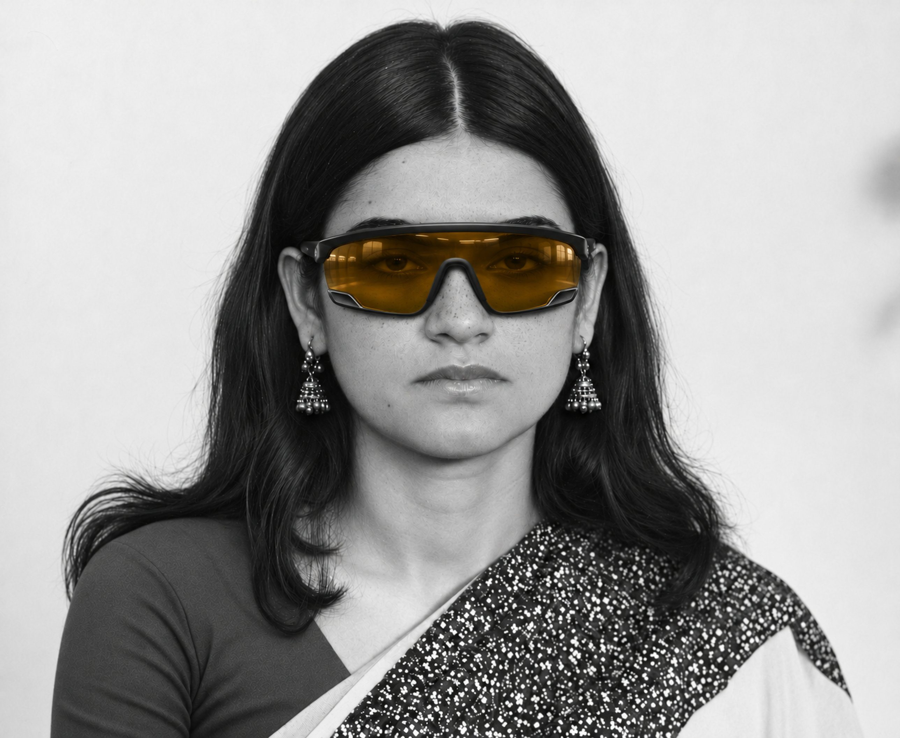
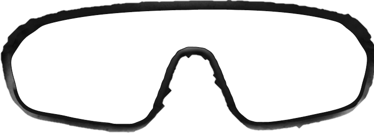
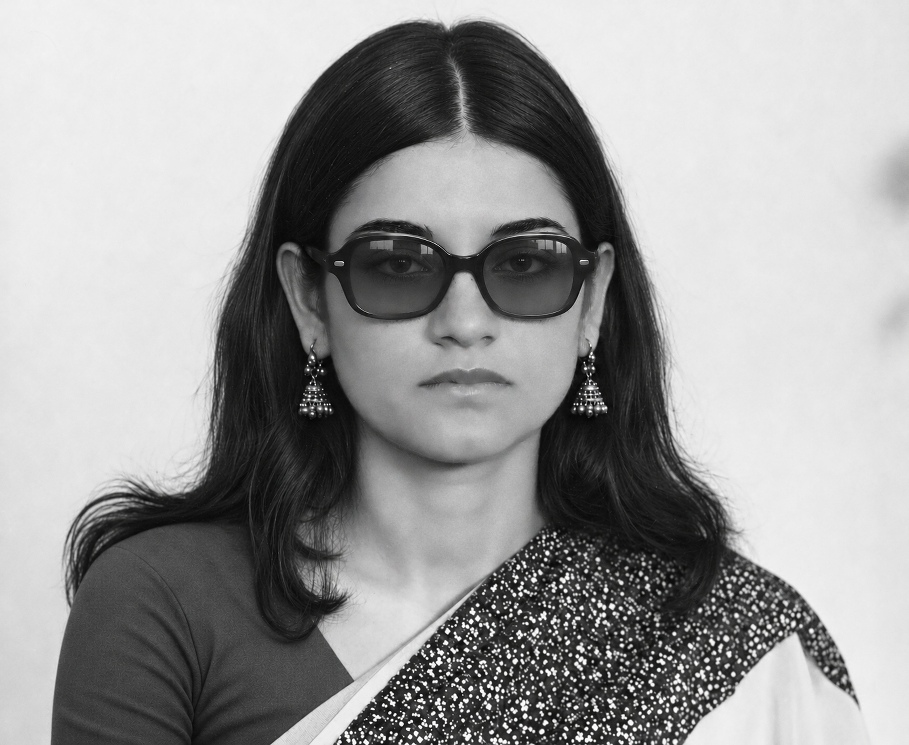

Raghu Rai and Maneka Gandhi · HarperCollins India
Animals
More than two hundred of Raghu Rai’s photographs of animals, taken across India over five decades, with an introduction by Maneka Gandhi.
Every drive, camp and open day is free to attend


Three booksAnimals, Orange Dogs and Tender Paws
Three filmsTest Subject V, Oslo: A Tail of Promise and Ohh My Dog
Chosen by the founder
Three films and three books about the lives we share with animals, chosen by Smt. Maneka Sanjay Gandhi.

Films
The trailer plays here. The full film is on its streaming service.
Kunal Avanti once lived for food. A turning point makes him rethink what he was taught about food, health and compassion. Presented by John Abraham.
Conservation biologist Pooja Bhale and Oslo, the Siberian husky whose bond with her shaped her life on a farm near Pune. Presented by John Abraham.
A schoolboy sets out to find his missing dog, while in Bihar a loyal dog searches for the young man he lives with. With Pankaj Tripathi and Pavan Malhotra.
Books
Raghu Rai and Maneka Gandhi · HarperCollins India
More than two hundred of Raghu Rai’s photographs of animals, taken across India over five decades, with an introduction by Maneka Gandhi.
Deepak Virwani
A tender, funny story of two dogs, Zuzu and Dabbu, and the two people whose home they make their own: about the love that finds its way into ordinary homes, and what stays after it goes.
Balvant Singh · Supported by SPCA Fiji
Moti, a young puppy on a farm in rural Fiji in the 1960s, tells his own story: of loyalty, of love, and of how the animals around us are treated. For readers aged 10 to 18.